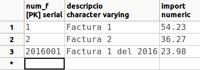

2. Consultes d'actualització (DML)
2.1 INSERT
Servirà per a introduir noves files en una determinada taula. Hi ha dues variants d'aquesta sentència. La primera servirà per a introduir noves files proporcionant-li les dades, és a dir, indicant expressament els nous valors dels camps. L'altra podria servir per a introduir noves files de forma més massiva, agafant les dades de les taules ja existents per mig d'una sentència SELECT.
Sintaxi
per a inserció amb valors
INSERT INTO taula [ (camp1 [,camp2 [,...]]) ]
VALUES (valor1 [,valor2 [,...]]) [,(...)]
Com es pot comprovar d'aquesta manera s'introduirà una fila nova, i es proporcionen les dades directament, com a constants. Opcionalment podem introduir els valors per a una segona fila o quantes es vulguen, sempre posant les dades de cada fila entre parèntesis, i si hi ha més d'una fila, separats per comes.
És opcional posar la llista de camps de la taula. Si no es posen, s'haurà de posar un valor per a cada camp de la taula, i en el mateix ordre com estan definits en la taula.
Si posem expressament els camps de la taula, els podrem posar amb l'ordre que vulguem, i no caldrà posar-los tots. Els camps no especificats quedaran amb el valor nul (a no ser que tinguen un valor predeterminat, un valor per defecte). Per tant, haurem de posar obligatòriament tots els camps definits com a no nuls (inclosa la clau principal).
Per a posar el valor nul a un camp posarem explícitament NULL.
Si tenim definit un camp autonumèric (SERIAL) i volem continuar amb el següent de la seqüència, no li hem de posar cap valor. Per tant en la sentència SQL no haurà de constar el camp: haurem de posar la llista de camps, i en aquest no ha d'estar el camp autonumèric. Veurem després un exemple per veure-ho més clar.
Per contra, podem trencar la seqüència posant-li un valor al camp autonumèric, però això no haurà modificat la seqüència. Si volem modificar-la hauríem de fer-ho amb la sentència ALTER SEQUENCE.
Exemples
1) Introduir un departament nou amb les següents dades: Número: 6 ; Nom: Personal ; Director: 18922222 i Data: 01/05/99.
INSERT INTO DEPARTAMENT
VALUES (6,'Personal','18922222','01/05/99');
2) Introduir dos departaments nous, aquest vegada sense posar la data: Número: 7 ; Nom: Vendes ; Director: 18876543. I Número: 8 ; Nom: Internacional ; Director: 18999999. Podem posar a més l'ordre que vulguem:
INSERT INTO DEPARTAMENT (num_d,director,nom_d)
VALUES (7,'18876543','Vendes') , (8,'18999999','Internacional');
També ho podíem haver fet així. Observeu que ara l'ordre ha de ser exactament el de la definició de la taula.
INSERT INTO DEPARTAMENT
VALUES (7,'Vendes','18876543',NULL) , (8,'Internacional','18999999',NULL);
3) Introduir 3 empleats en la taula EMPLEAT1 , amb els valors següents (la taula EMPLEAT1 la vam crear en la primera sentència d'exemple de la pregunta 3.2.2, CREATE TABLE):
- Dni: 11111111a ; Nom: Albert
- Dni: 22222222b ; Nom: Berta
- Dni: 33333333c ; Nom: Clàudia
INSERT INTO EMPLEAT1 VALUES ('11111111a','Albert') , ('22222222b','Berta') , ('33333333c','Clàudia')
4) Introduir 3 empleats en la taula EMPLEAT2, amb els valors següents (la taula EMPLEAT2 la vam crear en la segona sentència d'exemple de la pregunta 3.2.2, CREATE TABLE):
- Dni: 44444444d ; Nom: David ; Departament: 6 ; Sou: 1000
- Dni: 55555555e ; Nom: Elena ; Departament: 6 ; Sou: 1500
- Dni: 66666666f ; Nom: Ferran ; Departament:7 ; Sou: 1750
INSERT INTO EMPLEAT2 (dni,nom,departament,sou) VALUES ('44444444d ','David ',6,1000) , ('55555555e ','Elena',6,1500) , ('66666666f ','Ferran ',7,1750)
5) Suposem que tenim una taula de FACTURES en la BD proves , amb una clau principal que és un autonumèric (SERIAL). Com volem practicar únicament l'autonumèric, la crearem senzilleta, amb la següent estructura:
CREATE TABLE FACTURES
( num_f SERIAL PRIMARY KEY,
descripcio VARCHAR,
import NUMERIC );
La manera d'anar introduint normalment serà sense especificar num_f, per a que vaja agafant valors consecutius.
INSERT INTO FACTURES (descripcio,import)
VALUES ('Factura 1',54.23);
Però si volem trencar la seqüència, sí que posarem num_f.
INSERT INTO FACTURES
VALUES (2016001,'Factura 1 del 2016',23.98);
Això sí, si introduïm un altra fila sense especificar el número de factura, l'agafarà de la seqüència, que no s'hava modificat, i per tant el valor que ens donarà serà 2.
INSERT INTO FACTURES (descripcio,import)
VALUES ('Factura 2',36.27);
Per a canviar definitivament el valor que ha d'anar autoincrementant-se, hauríem de modificar la seqüència (ALTER SEQUENCE).
Després de les 3 insercions anteriors, el contingut de la taula FACTURES serà aquest:

Sintaxi per a inserció amb subconsulta
INSERT INTO taula [ (camp1 [,camp2 [,...]]) ]
SELECT ...
És a dir, les dades que van a inserir-se les traiem a partir d'una sentència SELECT. La sentència SELECT pot ser tan complicada com faça falta, i podem posar les clàusules necessàries: WHERE, GROUP BY, ... El requisit és que haurà de tornar tants camps com tinga la taula o com estiguen especificats en la sentència INSERT, i que les dades que tornen siguen del mateix tipus (o tipus compatibles, encara que Access pot fer una conversió de tipus automàtica). Igual que en l'anterior format, quan no s'especifique un camp se li assignarà el valor nul, o el valor predeterminat si en té definit.
Es podria especificar fins i tot una taula d'una base de dades externa. Consulteu la sentència SELECT, l'apartat "Especificació d'una B.D. externa".
Exemples
1) Inserir tots els registres de la taula EMPLEAT1 en EMPLEAT3 , suposant que existeixen aquestes taules i encara que tenen una estructura diferent, les dues tenen els camps dni i nom. Si no existeix la taula EMPLEAT3 , pots tornar a crear-la, utilitzant l'última sentència de la pregunta 3.2.3 (Restriccions)
INSERT INTO EMPLEAT3(dni,nom)
SELECT dni,nom FROM EMPLEAT1;
2) Inserir en la taula EMPLEAT3 tots els empleats de la taula EMPLEAT2 dels departaments 6 i 7.
INSERT INTO EMPLEAT3
SELECT * FROM EMPLEAT2
WHERE departament IN (6,7);
3) Inserir en la taula EMPLEAT3 els empleats que tenen més d'un familiar. Aquesta sentència no la podrem executar, ja que no tenim la taula FAMILIAR. Està únicament de manera il·lustrativa.
INSERT INTO EMPLEAT3
SELECT * FROM EMPLEAT
WHERE dni IN (SELECT dni
FROM FAMILIAR
GROUP BY dni
HAVING COUNT(*) > 1);
 Exercicis
Exercicis
Com ja s'ha comentat a la introducció, i per no interferir entre nosaltres, cadascú es connectarà a la seua Base de Dades f_grup_9999x (on grup és el vostre grup p.ex. 1cfsg, 1cfsh... , 9999 són les 4 últimes xifres del vostre DNI, i x la lletra del NIF).
L'esquema Entitat-Relació i l'esquema relacional és el següent:

Ex_1 - Inserir en la taula CATEGORIA les següents files:
| cod_cat | descripcio |
|---|---|
| BjcOlimpia | Components Bjc Seria Olimpia |
| Legrand | Components marca Legrand |
| IntMagn | Interruptor Magnetotérmico |
| Niessen | Components Niesen Serie Lisa |
Ex_2 - Inserir els següents articles.
| cod_art | descrip | preu | stock | stock_min | cod_cat |
|---|---|---|---|---|---|
| B10028B | Cruzamiento Bjc Serie Olimpia | 4.38 | 2 | 1 | BjcOlimpia |
| B10200B | Cruzamiento Bjc Olimpia Con Visor | 0.88 | 29 | BjcOlimpia | |
| L16550 | Cartucho Fusible Legrand T2 250 A | 5.89 | 1 | 1 | Legrand |
| L16555 | Cartucho Fusible Legrand T2 315 A | 5.89 | 3 | 3 | Legrand |
| IM2P10L | Interruptor Magnetotermico 2p, 4 | 14.84 | 2 | 1 | IntMagn |
| N8008BA | Base Tt Lateral Niessen Trazo Bla | 4.38 | 6 | 6 | Niessen |
Ex_3 - Inserir en la taula CLIENT tres files amb les següents dades
| cod_cli | nom | adreca | cp | cod_pob |
|---|---|---|---|---|
| 303 | MIRAVET SALA, MARIA MERCEDES | URBANIZACION EL BALCO, 84-11 | ||
| 306 | SAMPEDRO SIMO, MARIA MERCEDES | FINELLO, 161 | 12217 | |
| 387 | TUR MARTIN, MANUEL FRANCISCO | CALLE PEDRO VIRUELA, 108-8 | 12008 |
Ex_4 - Inserir la següent factura:
| num_f | data | cod_cli | cod_ven | iva | dte |
|---|---|---|---|---|---|
| 6535 | 2015-01-01 | 306 | 21 | 10 |
| num_f | num_l | cod_art | quant | preu | dte |
|---|---|---|---|---|---|
| 6535 | 1 | L16555 | 2 | 5.89 | 25 |
Ex_5 - Inserir la següent factura (aquesta té més d'una línia de factura).
| num_f | data | cod_cli | cod_ven | iva | dte |
|---|---|---|---|---|---|
| 6559 | 2015-02-16 | 387 | 10 | 10 |
| num_f | num_l | cod_art | quant | preu | dte |
|---|---|---|---|---|---|
| 6559 | 1 | IM2P10L | 3 | 14.84 | |
| 6559 | 2 | N8008BA | 6 | 4.38 | 20 |
2.2 DELETE
Aquesta sentència servirà per esborrar files senceres d'una determinada taula.
Si es volen esborrar només alguns camps d'una o unes determinades files, no s'ha d'utilitzar aquesta sentència, sinó que s'haurà d'utilitzar la sentència UPDATE per a posar els camps a NULL.
Sintaxi
DELETE FROM taula
[WHERE condició]
S'esborraran les files que acomplesquen la condició. Si no es posa el WHERE s'esborraran tetes les files de la taula (però no la mateixa taula, l'estructura; és a dir, continuarà existint la taula, però buida).
Per la perillositat de la sentència, és convenient fer primer una sentència SELECT, i quan estiguem segurs que se seleccionen només les files que volem esborrar, canviar-la per DELETE. També és molt convenient fer còpies de seguretat de les taules o de tota la Base de Dades.
Exemples
1) Esborrar totes les files de EMPLEAT2
DELETE FROM EMPLEAT2;
2) Esborrar d'EMPLEAT3 els empleats del departament 7
DELETE FROM EMPLEAT3
WHERE departament=7;
3) Esborrar d'EMPLEAT3 els empleats majors de 47 anys (en realitat no s'esborrarà cap perquè no tenim introduïda la data de naixement)
DELETE FROM EMPLEAT3
WHERE EXTRACT(year FROM AGE(CURRENT_DATE,data_naixement) )>=47;
4) Esborrar d'EMPLEAT aquells empleats que trebalen en projectes menys de 20 hores (no es molt convenient confirmar l'eliminació dels registres, ja que ens quedaríem sense dades importants)
DELETE FROM EMPLEAT
WHERE dni IN (SELECT dni
FROM TREBALLA
GROUP BY dni
HAVING SUM(hores)<20);
Exercicis
En f_grup_9999x (on grup és el vostre grup, 9999 són les 4 últimes xifres del vostre DNI, i x la lletra del NIF)
Ex_6 - Esborrar la factura 6559. Comprovar que també s'han esborrat les seues línies de factura
Ex_7 - Esborrar els articles dels quals no tenimstock mínim.
2.3 UPDATE
Aquesta sentència servirà per a modificar algun o alguns camps de determinades files d'una taula.
En concret també servirà per "esborrar" el contingut d'algun camp d'alguna fila. El que farem serà posar a NULL aquest camp.
Sintaxi
UPDATE taula
SET camp1=valor1 [ ,camp2=valor2 [,...] ]
[ WHERE condició];
Posarem per tant, després d'especificar la taula, el camp (o camps) que volem canviar seguit del nou valor. En cas de voler canviar més d'un camp, aniran separats per comes.
Només canviaran els valors de les files que acomplesquen la condició. Si no es posa condició es modificaran totes les files.
Farem la mateixa consideració de perillositat que en el DELETE: és convenient fer primer una sentència SELECT, i quan estiguem segurs que se seleccionen només les files que volem modificar, canviar-la per UPDATE amb la modificació dels valors. També és molt convenient fer còpies de seguretat de les taules o de tota la Base de Dades.
Exemples
1) Esborrar totes les dates d'incorporació de la taula EMPLEAT3
UPDATE EMPLEAT3
SET data_incorporacio=NULL;
2) Augmentar el sou un 5% als empleats del departament 6 de la taula EMPLEAT3.
UPDATE EMPLEAT3
SET sou = sou * 1.05
WHERE departament=6;
3) Canviar la població a Ares i el departament al 8, a tots els empleats de Castelló de la taula EMPLEAT3
UPDATE EMPLEAT3
SET departament=8, poblacio='Ares'
WHERE poblacio='Castelló';
Exercicis
En f_grup_9999x (on grup és el vostre grup, 9999 són les 4 últimes xifres del vostre DNI, i x la lletra del NIF)
Ex_8 - Llevar tots els codis postals dels clients.
Ex_9 - Pujar el preu dels articles de la categoria BjcOlimpia un 5% (el resultat serà que l'únic article d'aquesta categoria haurà passat d'un preu de 4.38 a 4.60€)
Llicenciat sota la Llicència Creative Commons Reconeixement NoComercial CompartirIgual 3.0